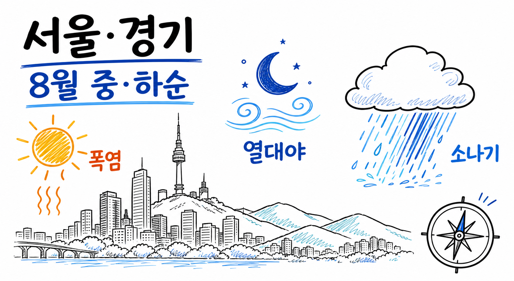

260809 · WEATHER OUTLOOK · 기준 2026.08.09 06:00 KST
서울·경기
8월 중순~말 날씨 전망
핵심 판단: 8월 15~19일은 기상청 중기예보상 최고 33~35℃의 고온 위험이 핵심입니다. 8월 20~31일은 일별 예보 범위 밖이므로, 폭염·열대야·국지성 호우 가능성에 대비하는 운영 구간으로 봐야 합니다.

AI 생성 인포그래픽 · 기상청 공식 경보 이미지 아님
1. 예보를 읽는 법
| 기간 | 읽는 기준 | 주의 |
|---|---|---|
| 8/15~19 | 기상청 중기예보의 권역별 날씨·강수확률·기온 | 예보이며 갱신될 수 있음 |
| 8/20~31 | 1개월 전망의 주별·권역별 기온·강수 확률 | 특정 날짜의 비·맑음·기온을 단정하지 않음 |
2. 8월 15~19일 공식 중기예보 요약
| 날짜 | 서울 최저/최고 | 경기 주요 지점 | 강수확률·판단 |
|---|---|---|---|
| 15일 | 26 / 35℃ | 수원·평택 35℃, 파주 33℃, 이천 34℃ | 20% · 야외활동 열위험 우선 |
| 16일 | 25 / 34℃ | 수원 35℃, 파주 33℃, 이천 34℃ | 20% · 낮 시간 노출 관리 |
| 17일 | 25 / 34℃ | 수원 35℃, 파주 33℃, 이천 34℃ | 20% · 고온 지속 가능성 |
| 18일 | 25 / 34℃ | 수원 35℃, 파주 33℃, 이천 34℃, 평택 35℃ | 10% · 비보다 열관리 우선 |
| 19일 | 중기예보 원문 재확인 필요 | 발표 갱신값 확인 | 행사·이동은 전날 최신 예보 확인 |
3. 20~31일: 확정 예보가 아닌 리스크 관리
폭염·열대야: 기준일 서울·경기권은 폭염·열대야 특보 위험이 현실화된 상태였습니다. 다만 이후 특보의 지속·해제는 단정할 수 없으므로 매일 특보를 확인해야 합니다.
국지성 호우: 강수확률이 낮아도 짧은 시간의 강한 비·돌풍 가능성을 배제할 수 없습니다. 침수 취약 이동 경로·옥외 행사는 당일 초단기강수예측을 재확인하세요.
4. 실행 체크리스트
- 개인: 11~17시 야외활동 축소, 수분·그늘·냉방 접근성 확인, 야간 수면환경 관리.
- 행사·현장: 그늘·식수·휴식 기준, 비상연락망, 우천 대체 동선과 중단 기준을 사전 확정.
- 당일 의사결정: 기상청 특보·단기예보·초단기강수예측을 전날과 당일 재확인.
5. 반대 시나리오와 한계
고온 전망이 있어도 구름·강수·바람 변화로 체감은 달라질 수 있습니다. 반대로 강수확률이 낮다고 ‘비가 없다’는 뜻도 아닙니다. 이 보고서는 15~19일의 중기예보와 20일 이후의 장기적 위험 관리만 구분해 다루며, 태풍·집중호우·특보를 미리 확정하지 않습니다.
출처 · 클릭하여 펼치기
- 기상청 중기예보 — 2026-08-09 06:00 발표 기준
- 기상청 1개월 전망
- 기상청 특보
- 국민안전24 호우 행동요령